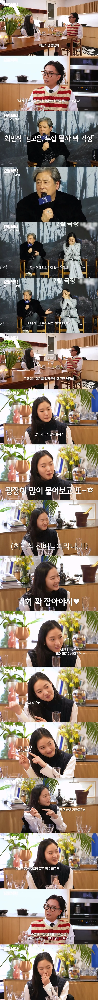
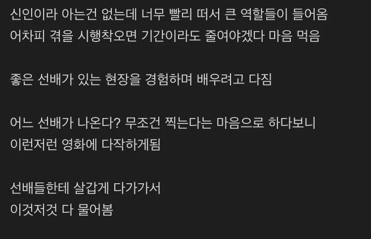

난 비슷한 결로 연진이가 존나 대단한거같음
결국 연기력으로 완벽하게 인정받음
근데 뭔가 약간 연진이는 그 연진이가 보여... 발성이나... 그 화내는 모습같은게.. 그 이전에 캐릭터들 느낌이랑 다르게 그 뒤로 하는 표정이나 이런게 너무 연진이가 보여..
곽도원이나 황정민이 다른데서도 비슷한모습보이는거랑 같은이치일듯..ㅋㅋ
맞네 비유를 들으니까 딱 그 느낌에 가까움
큰입이 그 캐릭터성을 부여하는건 아닐까 하는 생각을 한 적이 있긴 함
연진이도 다작하긴했지 다양하게
진짜 대단한거같음 기회가 왔을때 여러가지 다 한다는게
프로네
도깨비식 연기는 못보겠는데 차이나타운에선 너무 잘했음
와 이수지 살 엄청 뺐네?
독하다 ㄹㅇ
???:아저씨 사랑해요~
존나이뻐졌네
마인드좋네 ㄷㄷ
근데 할래 한다고 할 수 있다는 게 대단하네
협녀에서는 배우끼리 마찰있었다고하던데 걍 헛소문인가?
ㅇㅇ
뭘 해도 될 사람
그러다 개콘에도 나오고
snl에서 활약하는거 보고 놀랐음
선배 배우 생각하면 납득 가긴 하네. 전도연 김혜수 이병헌 이선균 윤여정...
이런 후배 있으면 엄청 좋아할거 같긴하다 ㅋㅋㅋ
열정보소
기본적으로 사람을 어려워하지 않아야 가능한 테크인데
영화판 생각하면 서로 레퍼런스도 챙겨줄거고 엄청 똑똑한 방식
미움받지 않을수 있다는 용기? 같은게 많아보임
한국에서만 살면 잘 안생기는 요소인데 ㅋㅋㅋ
최대한 많은 경험을 쌓아서 연기력을 빠르게 끌어올리려는거구나.
한예종 출신은 다르네.
사회 생활 ㅈㄴ 잘했네
차이나타운 러브라인 들어간거 빼면 재밌었음
술 잘먹긴 하나보네 ㅋㅋㅋㅋ
은교 이후 3년 사이 영화들 주연배우 보니까
성난변호사 : 이선균 김원희
차이나타운 : 김혜수 엄태구
협녀 : 이병헌 전도연
계춘할망 : 윤여정
야이 새끼들아 자 봐라 꽉찬 에이컵 댓냐?
재미나게 봄
경험으로 커버되는 직업이라면 미친듯이 구르는게 점프하는 길이지
서울에서 태어나 아버지의 직장 때문에 만 3세 때부터 중국 베이징시에서 10년을 살았다. 그중에 5년은 베이징 북동부 미윈현[11]에서 지냈다.# 중국에서 총 10년 간 생활하고 만 13살인 중학교 1학년 때 가족이 다 함께 대한민국으로 귀국했다.#
중국 시골[12]에는 한국학교와 국제학교가 없기 때문에 현지 중국 학교를 다녔다. 당시 동네나 학교에 외국인은 오직 김고은의 가족들 뿐이었고, 한인교회를 다니면서 친한 한국인 친구가 한명 있었다고 한다. 한국으로 귀국해서 적응하느라 고생을 좀 했다고 한다. 이 때 경험으로 중국어가 유창하다. 공식 행사 스케줄로 중국을 방문하게 되면 본인에게는 중국이나 홍콩이 낯설지 않다고 말하면서 친근감을 표현하며 어린 시절 중 시골에서 다양한 경험을 하며 지냈던 시간이 연기 생활과 가치관 형성에 많은 도움이 되었다고 한다.
글쿤
와 👍